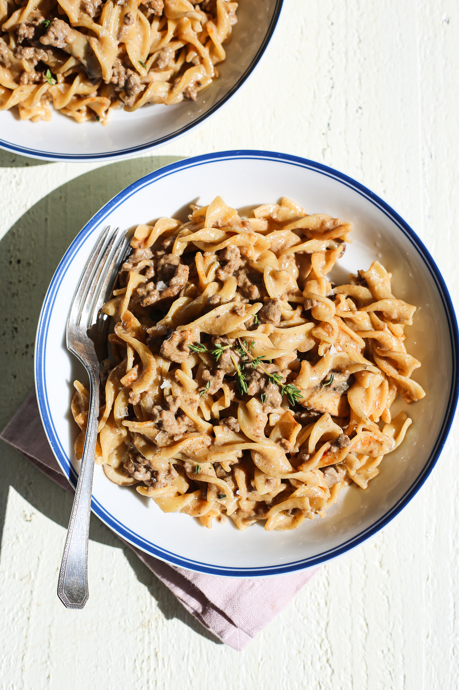

One-Pot Hamburger Helper Beef Stroganoff

Description
A cleaner version of a childhood favorite! This one-pot hamburger helper beef stroganoff is serious winter
comfort food that the whole family will love.
From The Defined Dish: One-Pot
Hamburger Helper Beef Stroganoff
Ingredients
- 2 tbsp extra virgin olive oil
- 1 cup yellow onion, finely diced
- 1 lb ground beef, 85% lean
- 1 cup mushrooms, sliced thin
- 1/2 tsp garlic powder
- 1/2 tsp onion powder
- 1/2 tsp paprika
- 1 tsp kosher salt
- 1/2 tsp black pepper
- 2 tsp dijon mustard
- 4 cups wide egg noodles, uncooked
- 4 cups beef broth
- 2 tbsp white wine vinegar
- 8 oz light sour cream
- 2-3 sprigs of fresh thyme, leaves only, for serving
Steps
- Heat a large skillet over medium-high heat with olive oil. Add the onions and cook, stirring, for 2 to 3
minutes.
- Add the ground beef. Brown the beef, garlic powder, onion powder, paprika, salt and pepper. Cook, breaking
up the meat with the back of a spoon, until no longer pink, 5 to 7 minutes.
- If you feel like there is too much excess fat, drain off but reserve about 2 tablespoons of the fat to saute
the mushrooms in.
- Add the dijon mustard and mushrooms and cook, stirring, until well-combined and when the mushrooms have
soaked up some of the excess fat and are softened, 3 to 4 minutes.
- Then, add the uncooked wide egg noodles, beef broth and white wine vinegar. Bring to a boil and cook,
stirring often, until noodles are tender and liquid has been absorbed, about 12 minutes.
- Remove skillet from heat and stir in the sour cream.
- Taste and add more salt, if desired. Garnish with thyme, serve and enjoy!
Return to Home Page